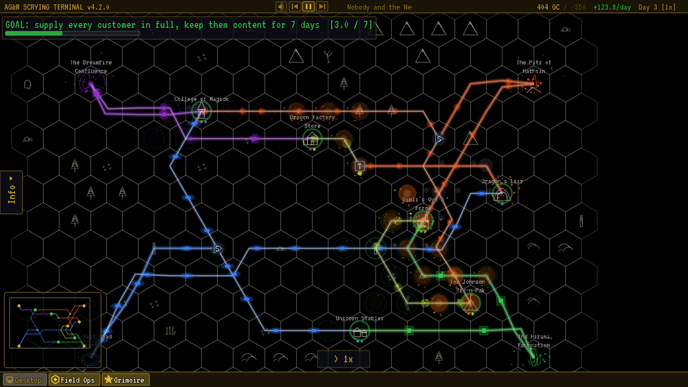
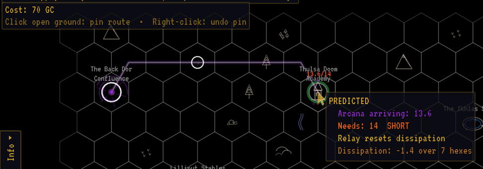
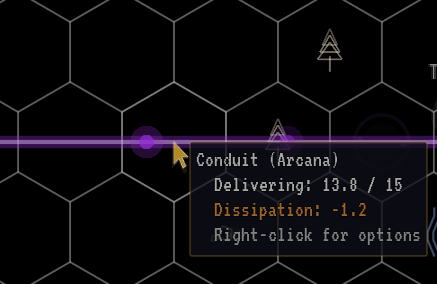
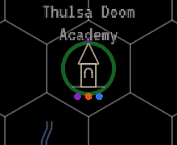
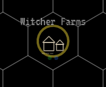
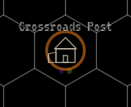
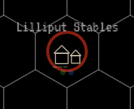
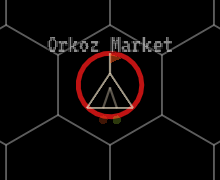
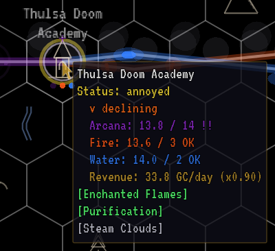

Field Manual
How to Play
You work for AG&W Inc., the realm's mana utility. Each operation drops you onto a hex map with mana sources on one side and customers who need that mana on the other. Connect them, stay on budget, and keep everyone happy long enough for Dispatch to call it a success.
Operations
The campaign is made of 19 operations across six career tiers, from Probationary Line Technician to Chief of Reclamation. Each one is a hand-built region with its own map, starting budget, debt limit and goal. You start each operation from your desk in the AG&W terminal, and each one opens with a briefing memo from Dispatch that tells you what's expected.
Early operations teach one idea at a time. New components unlock as you go: Relay Stations and Splitters, then Transformers and Batteries, then Filters and conduit upgrades. The unlock table lists when each one arrives. An operation that introduces a component is built so that you need it to win.
You can replay any completed operation from the Archives to improve your best day. Replays don't change your career progress.
The map
Operations take place on a hex grid. Terrain is decoration; you can build across any of it. You'll find three kinds of buildings:
- Sources produce mana. A standard source makes 30 mana of one type per day.
- Customers need one or more mana types and pay for what they receive.
- Hybrids need some mana and produce another kind, but only while all of their own needs are met.
Every type of magical energy is measured in mana. Arcana, fire, water, earth and gas all use the same unit, so 15 mana of fire and 15 mana of water are the same amount. Production, needs and conduit capacity are all counted in mana per day.

A typical operation. Sources on one side, customers on the other, and the conduits you build between them. View full size

- Source (a Ley Line Nexus)
- Conduit, with mana pulses
- Customer (a Wizard Academy)
- Mood ring (satisfaction)
- Need dots: bright means that type is supplied
- Transformer
- Splitter
- Hybrid (a Dwarven Forge)
- Goal and Content streak bar
- Budget and credit limit
- Daily income
- Day and speed
- [Info] tab: press N
- Minimap: press M
- Speed control (time)
- Taskbar: back to your desktop
All sources are visible from the start, along with the first 3 customers. Any remaining customers come online one at a time, every 5 days, with an [OPS.STATUS] notice. You can't complete an operation while customers are still waiting to appear, so leave yourself some budget for the latecomers.
Hover any building to see what it produces or needs and how much it's currently receiving. Press N (or click the [Info] tab on the left edge) to open the Info drawer. Its Customers and Resources tabs list every building on the map, and clicking a row pans the camera there. Full details for each building are on Sources & Customers.
Building conduits
Conduits are the ley lines that carry mana. To build one:
- Left-click a source (or a component that's already receiving mana).
- Left-click the destination. The conduit finds its own route.
- To steer it, click open ground while drawing to pin a waypoint. Right-click removes the last pin; with no pins left it cancels the line. Esc cancels outright.

Drawing a conduit. Click open ground to pin the route; the prediction shows what will arrive before you commit.
- Start: the source you clicked
- Pinned waypoint
- Route preview
- Cost, and the pin hint
- Prediction: what will arrive, and whether it's short
A basic conduit costs 10gc per hex step. The rules of the road:
- Two conduits per source. A source can feed at most two conduits. To serve more buildings, run a conduit to a Splitter.
- Customers have no limit. Run several conduits into one customer to top it up, or to bring it several types.
- Two conduits per hex. At most two conduits can share an open-ground hex. The router goes around full hexes and around buildings and components that aren't part of the line.
- Every conduit needs a use. A conduit must end at a component, or at a customer that uses what it carries. Try to send a customer a type it doesn't need and Dispatch refuses:
[GRID.TYPE] … doesn't use … energy. - No duplicates. You can't build a second identical conduit between the same two points.
You can build while the game is paused, and Ctrl/Cmd + Z undoes your last action.
Tearing down and refunds
Right-click a conduit and choose Tear Down, or a component and choose Remove. Anything you built yourself refunds in full, including the upgrade cost of an upgraded conduit. Infrastructure that was already on the map when you arrived refunds nothing.
If you make a mistake, tear it up. Full refund. We're not monsters.
Orientation memo, your first day
Capacity
A basic conduit carries up to 15 mana per day. An upgraded conduit carries 30 mana per day.
Every source, hybrid and component divides its output evenly across its outgoing conduits of that type, whatever the buildings downstream actually need. A 30-mana source with two conduits sends 15 mana down each. A 30-mana source with only one basic conduit sends 15, and the other 15 goes nowhere.
Because splits are even, a customer that needs 3 gets the same share as one that needs 10. Plan your branches so the big consumers get their own conduits.
When a conduit runs above 80% of its capacity, its pulses speed up and its glow brightens. That's a visual warning only; nothing is lost.
Distance and dissipation
Mana leaks as it travels: every conduit loses 0.2 mana per hex, which is 1 mana for every 5 hexes. The loss is charged once per conduit, on its total flow.
Energy depletes by 1 for every 5 hexes it travels.
Field prompt

A conduit's tooltip shows how much it delivers and how much it loses to distance.
- Delivered against capacity
- Lost to distance
So a full 15 mana sent down a 10-hex conduit arrives as 13 mana. If the customer at the end needs 15, it's short, and a short customer gets frustrated. Two ways out:
- Send surplus. Feed more than the exact demand so there's room for the loss.
- Use a Relay Station. A conduit that ends at a Relay Station loses nothing, however long it is. Only the leg after the last relay pays dissipation.
Money
AG&W pays in Gold Crowns, written gc in this manual. The game's own screens print it as GC. Prices, budgets, upkeep and revenue are all in gc, so a 50gc Relay Station costs 50 Gold Crowns. Each operation sets its own starting budget.
Revenue
Customers pay continuously. A customer's daily revenue is:
Formulatotal demand in mana × 2gc × share of demand supplied × mood multiplier
A Farming Village that needs 5 mana of water and 3 of earth earns 16gc per day when fully supplied and Content. If it only gets half its mana, it pays half. Angry and Furious customers pay nothing at all. Some interactions add revenue bonuses or passive income on top.
Costs
- Construction: conduits at 10gc per hex (25gc when upgraded), components at their listed price.
- Upkeep: every component charges a small amount per day. Conduits have no upkeep.
- Furious customers: each one costs you 50gc per day on top of paying nothing.
Debt limit
Your budget can go below zero. You can keep building on credit as long as each purchase leaves you above your debt limit, which the briefing shows as Credit limit: -N GC. The game calls it your credit limit. If your balance ever reaches the limit, the operation fails immediately with an audit. The limit grows over the campaign, from 100gc in the first operations to 800gc at the end.
Budget warnings appear once you drop under 200gc.
Customer satisfaction
Every customer tracks frustration for each mana type it needs. Its mood, shown by the colored ring around it, is set by its worst type.
- While a type is under-supplied, frustration rises each day by the shortfall in mana times the customer's sensitivity. Sensitivity is measured in feels: a customer with 1.5 feels that is 2 mana short gains 3 frustration a day. Touchy customers like the Wizard Academy (1.5 feels) sour quickly; a Farming Village (0.5 feels) is patient.
- While a type is fully supplied, its frustration falls by 3 per day.
| Mood | Frustration | Ring | Revenue |
|---|---|---|---|
| Content | 0–20 | green (blue in colorblind mode) | 100% |
| Annoyed | 21–45 | yellow | 90% |
| Frustrated | 46–65 | orange | 75% |
| Angry | 66–85 | red | 0% |
| Furious | 86–100 | pulsing bright red | 0% and −50gc/day |

Content

Annoyed

Frustrated

Angry

Furious
Customer moods, from Content to Furious. Angry and Furious customers pay nothing.
Hover a customer to see each type's got / need and whether its mood is improving or declining. Recovery is slow: a Furious customer needs weeks of full supply to calm down, so it's far cheaper to fix shortages early.

Hovering a customer shows what each mana type receives against what it needs. The !! marks a type that's short.
- Mood trend
- Received against need, per type
!!marks a type that's short- Revenue, scaled by mood
Complaints
The first time a customer reaches Frustrated, Angry or Furious, it files a complaint ticket. Complaints are a warning (and usually a joke); the money effects come from the mood itself.
Time
The game runs in days. Operations start at the slowest speed, and you can change it with the speed button at the bottom of the screen or the keyboard:
| Speed | Real time per game day |
|---|---|
| 1x | about 10 seconds |
| 2x | about 5 seconds |
| 3x | about 3.3 seconds |
Space pauses and resumes; + and - step the speed. While paused the world freezes, but you can still pan, inspect and build. The game does not pause itself when you switch to another window, so you can leave an operation running in the background. Going back to the desktop with F1 does pause it.
The game autosaves every 5 days by default (adjustable in Settings).
Winning and losing
The goal is shown at the top of the screen and in the briefing.
- Connect all consumers. The first operations end as soon as every customer is receiving everything it needs.
- Keep everyone Content. Most operations ask for every customer to be fully supplied and Content at the same time for a number of consecutive days. A progress bar counts the streak. If anyone slips, the streak resets to zero.
- Special objectives. Some later operations add their own twist, such as a deadline, a minimum budget at the end, or a different target entirely. The briefing spells it out.
An operation fails if your budget hits the debt limit, or if it has a deadline and time runs out. You can retry straight away or return to the desktop.
When you win, you're promoted and the day you finished on is recorded as your best day for that operation (lower is better). Each operation has its own leaderboard on Steam.
After the campaign
Finish the campaign and two more ways to play open up on your desktop:
- Freelance Operations generates a fresh contract every time: a random map with 2 to 5 sources, 4 to 10 customers and 2 to 5 mana types. Every component and upgrade is available, and you work within the credit limit your career has earned. Keep every customer Content for the required streak, which is longer on maps with more customers. A finished job closes with Contract Complete; Freelance work doesn't change your title. It also brings customers you won't meet in the campaign. See Freelance customers.
- Custom Requisitions (Form 27-B) lets you design your own job. You pick the map size, 1 to 8 sources, 2 to 12 customers, the starting budget, which mana types appear, the goal and how long it must hold, your credit limit, and an optional deadline. A finished job closes with Requisition Complete.
Form 27-B offers three goals:
- Satisfaction Threshold: keep every customer fully supplied and Content for the set number of days.
- Connect All Consumers: supply every customer with everything it needs.
- Overload a Citadel: the map always includes a Dark Citadel. Deliver at least 150% of its total need for the set number of days.